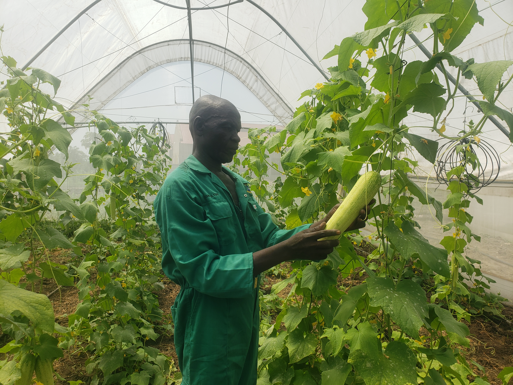

Practical Skills for Self-Reliance
SSVDP South Sudan continues to support vulnerable families and young people through practical livelihood and income-generating skills. These activities are rooted in the belief that development should strengthen dignity, participation and self-reliance. When people gain practical skills, they are better able to support themselves, contribute to their households and take part in the life of their communities with greater confidence.
Livelihood support is especially important for families facing poverty, displacement or limited access to stable income. Practical learning can help people move beyond immediate need and begin building more sustainable ways to care for themselves and those who depend on them. SSVDP's work in this area reflects its wider commitment to community empowerment and compassionate service.
Learning by Doing
Hands-on learning is central to practical skills development. Across its programme areas, SSVDP supports activities connected to agriculture, vocational skills, poultry, food processing, jam production and other locally relevant livelihood initiatives. These activities allow participants to learn through practice, observation and shared experience rather than theory alone.
Learning by doing also helps participants see direct connections between training and everyday life. A skill such as food processing, farming or poultry management can become a pathway toward small-scale income generation, household food security or stronger community cooperation. Practical activities can also encourage creativity, teamwork and problem solving, especially among young people and women seeking opportunities to improve their circumstances.

Supporting Economic Independence
Economic independence is not only about income. It is also about confidence, dignity and the ability to make decisions for the wellbeing of a household. Practical livelihood activities can help participants develop a sense of purpose and strengthen their capacity to respond to daily challenges. For vulnerable families, even small improvements in skills and opportunity can make a meaningful difference.
Through livelihood and skills-based work, SSVDP seeks to support people in ways that respect their abilities and encourage long-term resilience. The goal is not simply to provide short-term assistance, but to help communities develop practical foundations for self-reliance.
Working With Communities
SSVDP's approach is community based. Programmes are strongest when people participate actively, share their experiences and help shape activities that respond to local needs. This participatory approach reflects SSVDP's motto of development through community empowerment and participation.
As SSVDP South Sudan continues its service, livelihood and practical skills activities remain an important part of helping vulnerable communities build stronger futures. By investing in skills, participation and local capacity, SSVDP stands with families and young people as they work toward dignity, opportunity and self-reliance.